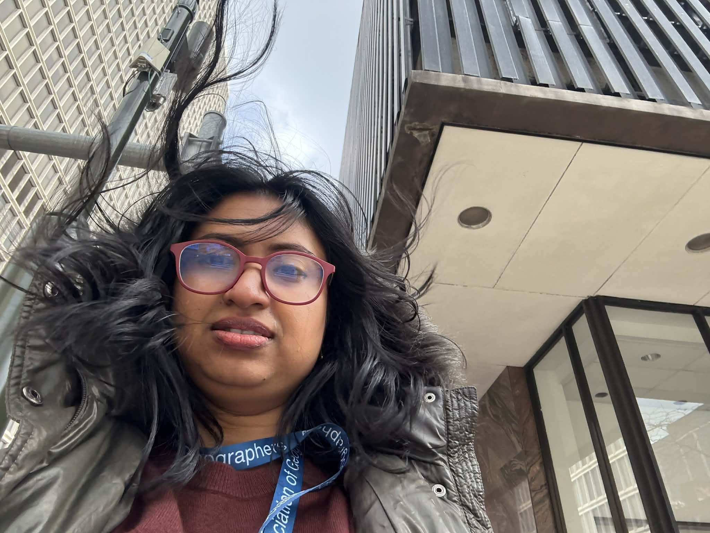

Poplin, A., Schroeder, S., Betcher, G., Sairamesh, V. P., Nourin, F., & Jacobson, N. (2023).
Play Ames: Imagine Your City. A City-University Partnership in Engaging Underrepresented Residents with Playful Learning Activities.
In Routledge Handbook of University-Community Partnerships in Planning Education (pp. 443–461). Routledge.
Kosacz, T., Gula, M., Poplin, A., Tobin, T., & Nourin, F. (2022).
Mapping unsafe places and emotions: study of Ames, Iowa.
In Proceedings of the Third International Symposium on Platial Information Science (PLATIAL’21) (pp. 5–10).
Mahmood, S., Nourin, F. T. J., Siddika, A., & Khan, T. F. (2017).
Encroachment of the Buriganga River in Bangladesh.
Journal of Minerals and Materials Characterization and Engineering, 5(05), 266.
Manuscripts in Preparation
Nourin, F. T. J., Cass, E., & Shao, W. (in prep.).
How do coastal residents prepare for hurricanes in pre-hurricane season?
University of Alabama.
Nourin, F. T. J., & Shao, W. (in prep.).
Shoreline change analysis of Mobile Bay, Alabama.
University of Alabama.
Nourin, F. T. J., Haque, M. M., & Shao, W. (in prep.).
Shifts in stakeholder perception through knowledge co-production in Mobile Bay.
University of Alabama.
Research in Progress
Hurricane Preparedness: Modeling perception and preparedness behaviors among coastal households.
Shoreline Change Analysis: Quantifying 25 years of coastal dynamics in Mobile Bay using Google Earth Engine.
Stakeholder Knowledge Co-Production: Understanding shifts in perception through co-produced knowledge and participatory engagement.
Conference Presentations
AAG, Detroit, Michigan
Presentation:Shift of stakeholder perception through knowledge co-production.

Alabama Water Resource Conference, Orange Beach, AL